Izpack : a possible path to a better Workstations provisioning.
Integrating Izpack with Workstation provisioning
Adrien Sales
Existing Workstation SCCM provisionings scenari
- Windows Install
- Windows Upgrades (Windows 7 to 10)
- Outlook, Office : install and upgrades
- Web Browsers : IE, Firefox, Chrome
- Web Browsers Upgrades
- Runtimes, Autocad, Java, etc...
Workstation context : an increasing number of Web based applications
- Custom Web developments
- On premise ERP
- Outside hosted web apps with specific browser requirements
- SaaS cloud based applications
- Actually no local SSO nor Cloud based identity management
Consequences
- Technical debt. inheritance as some apps do not support all web browsers
- Complexity for the end user to know which app to use with which browser
Knowledge stored in SCCM
- User/Group Centric approach
- SCCM knows which software to install, where and who for
- Users are actually grouped and continuously managed from SCCM for software deploying planning
How to provide ready to use (and configurable)
install package to SCCM so they can be easily deployed.
Who and how to build such packages.
Opportunities
- Bring some integration between devs and Workstation maintainers
- Generate more knowledge
- Tune Workstation for end user
- Bring more collaboration between teams
- Measure debt (by code) : ie. apps that are stuck on a specific browser
Technical background
- Java Developers
- Continuous build/release for everything (Github/Travis CI)
- Build everything with maven
- Cross platform development
Packaging (from maven)
Maven already used on personal projects to package :
- jar (of course)
- war
- debian packages
- rpm packages
- Any complex (mix of jars, images, shell, links, ...) java based application
Automatic delivery with Travis
Delivery process is the same as all others DSI projects :
- Travis release
- Automatic upload of the jar file on Github for each release
- The file can be downloaded by anyone (people, scripts or bots)
Automatic delivery with Travis
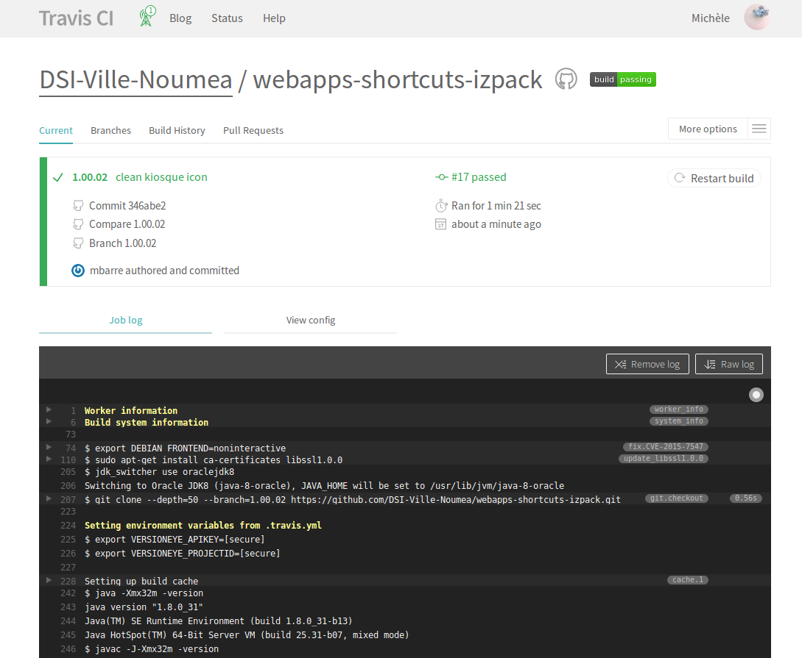
Automatic delivery with Travis
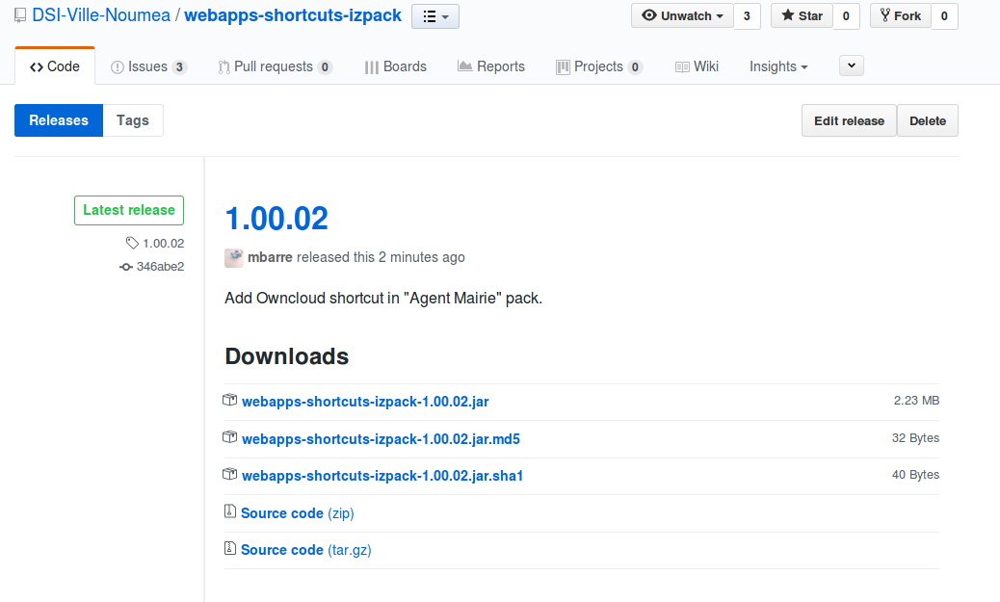
How to build a crossplatform (Windows, Mac, Linux, BSDs, ... ) installer ?
Main idea
Make a cross-platform installer that would :
- Only require a java runtime to be installed
- Built only from code (no click, no GUI)
- Be customizable ie. provide options during install process
- Be runnable/scriptable for automated deployment
- Embed resources like images, links, shortcuts in a single package
Izpack
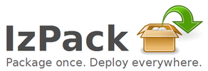
Package once. Deploy everywhere.
Famous Solution using izpack
Core installer architecture
- License agreement : the end user must accept
- A core pack with common shortcuts every one needs to have (webmail, Intranet, Issue Tracker, Business Intelligence, ...)
- Dedicated pack by app so we can create dedicated installers
- Very reduced scope of izpack features : focus on shortcuts only
Benefits
- Get apps shortcuts from your Desktop (full and fast text search from Start Menu : Win 7/10, KDE, Cinnamon, ...)
- Don't have to think about which browser to open with which app : just focus on the app name
Linux KDE integration : specific app.
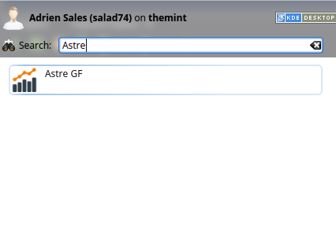
Linux KDE integration : common enterprise shortcuts
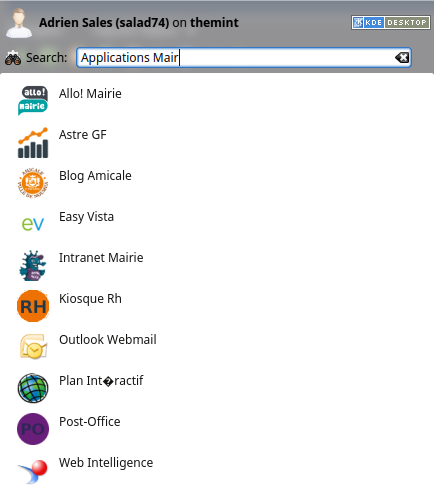
Linux Cinnamon integration : specific app.
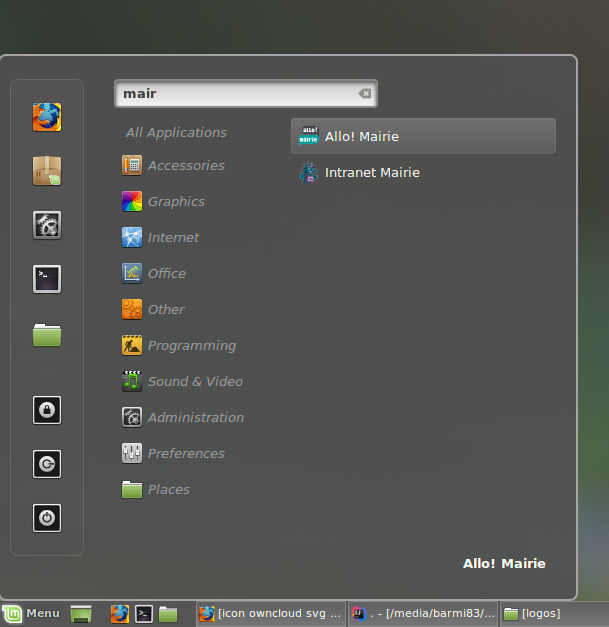
Linux Cinnamon integration : common enterprise shortcuts
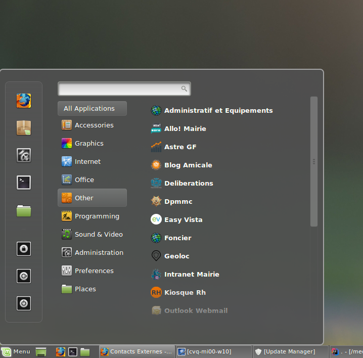
Linux integration : desktop shortcuts
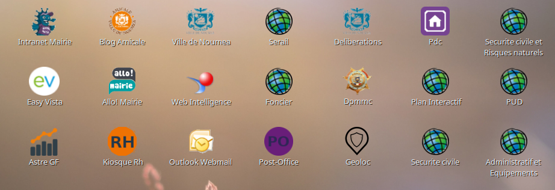
Windows 10 integrations : all enterprise webapps shortcuts
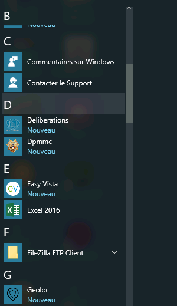
Custom install model with "Automatic Installation Script"
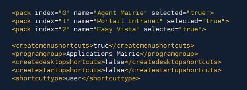
Integrate with SCCM
java -jar installer.jar auto-install-profile-minimalist.xml
java -jar installer.jar auto-install-profile-financial-tools.xml
...
From command line (interactive mode)
java -jar target/webapps-shortcuts-izpack.jar -console
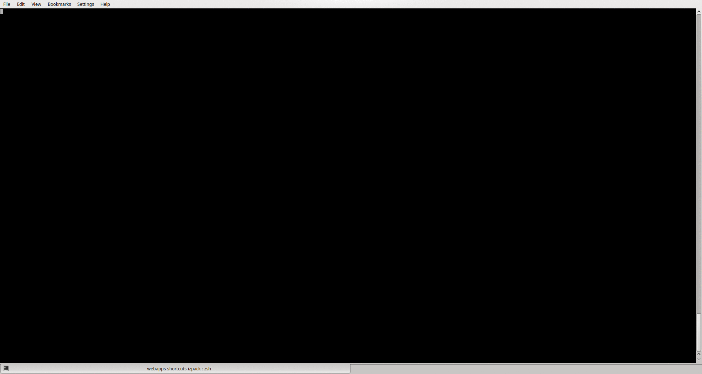
Demonstration : Interactive Installations
- "End-user" mode
- Install by clicking
- This will used by most users on Windows, MacOSX and Linux with a running X Server.
Demonstration : Interactive Installations with a GUI
- Install packs Agent Mairie
- Check shortcuts on "Desktop" and "Startup menu"
- Check files in "Programs Files\Applications Mairie" folder
- Check "Uninstaller" folder and uninstall
- Check "Programs Files" folder and "Desktop"
Demonstration : Unattended Installations Using Records of Previous Sessions
- "Admin" mode : the one the SIE will use
- Install through XML file
- It reproduces the same installation again, applying all previous user inputs automatically. No interaction is required any longer.
Demonstration : Unattended Installations Using Records of Previous Sessions
- Install packs Agent Mairie and SGAU with xml file
- Check shortcuts on desktop
- Check shortcuts on startup menu
- Check files in "Programs Files" folder
Demonstration : Unattended Installations Using Records of Previous Sessions
- Check PDC documentation shortcut
- The documentation has been uploaded with Travis on Owncloud
- The PDF is not part of the installer
- Users always access the last documentation version
- We don't need the SIE to re-deploy the new documentation
Other install creation softwares
First start on custom powershells (and why it failed)
- Mount a dedicated Windows dev environment
- Create shortcuts straight from PS
- Need to sign powershells script to make the deployable
- Need to put shared resources on the LAN (images, ...)
- Not very easy to release
Hand made (by click) msi : Smart Packager Pro (LANDPARK)
- Not free
- No continuous build
- Pure Windows
- Click based
- Not enough available human resources to maintain
Drawbacks
- Not cross platform
- No continuous build on Travis
- Complex build environment to setup
- Relies on tech we are not using on a daily basis
We are using izpack with maven as
part of our continous build at la Ville de Nouméa to package
our Web applications on people Desktops, integrated with SCCM, hence
bringing some DevOps skills in Workstation customization process.
All that with a very short learning path and without any additional license cost.